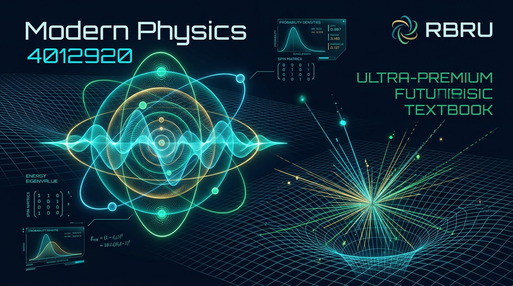

RBRU MOOC COURSEWARE • 4012920
ฟิสิกส์ยุคใหม่ (Modern Physics)
หลักสูตรวิชาการและแพลตฟอร์มการเรียนรู้เชิงปฏิสัมพันธ์ (Interactive Course & 3D AR Simulator) ประจำมหาวิทยาลัยราชภัฏรำไพพรรณี
👨🏫 อาจารย์ผู้รับผิดชอบรายวิชา
ผู้ช่วยศาสตราจารย์ ดร.ชีวะ ทัศนา (Asst. Prof. Dr. Chewa Thassana)
สาขาวิชาฟิสิกส์ คณะวิทยาศาสตร์และเทคโนโลยี มหาวิทยาลัยราชภัฏรำไพพรรณี
ระบบ E-Learning Portal: Course ID 262 (elearning.rbru.ac.th)
🎯 จุดเด่นของแพลตฟอร์มรายวิชา
- 40 หัวข้อย่อยแยกเพจสมบูรณ์: 8 บทเรียน × 5 หน้าย่อย โฟกัสเฉพาะประเด็น
- Live Computation Simulators: ปรับค่าตัวแปรเพื่อเห็นผลการคำนวณแบบ Real-time
- Worked Examples & Concept Checks: ตัวอย่างโจทย์ละเอียดและแบบทดสอบตรวจคำตอบสด
- 3D AR Physics Studio: เชื่อมต่อระบบจำลองเสมือนจริงระดับสูง
📚 สารบัญทั้ง 8 บทเรียน (คลิกเพื่อเข้าสู่เนื้อหา)
บทที่ 1
จุดกำเนิดของทฤษฎีควอนตัม
การก้าวข้ามขีดจำกัดของฟิสิกส์ดั้งเดิม สู่กำเนิดแนวคิดควอนตัมของพลังค์และโฟตอนของไอน์สไตน์
1.11.21.31.41.5
บทที่ 2
ทฤษฎีสัมพัทธภาพพิเศษ
กาลอวกาศเชิงสัมพัทธภาพ การยืดของเวลา การหดของระยะทาง และความสมมูลมวล-พลังงาน E = mc²
2.12.22.32.42.5
บทที่ 3
ทวิภาวะของคลื่นและอนุภาค
สมมติฐานเดอบรอยล์ การแทรกสอดของอนุภาค กลุ่มคลื่น และหลักความไม่แน่นอนของไฮเซนเบิร์ก
3.13.23.33.43.5
บทที่ 4
กลศาสตร์ควอนตัม
ฟังก์ชันคลื่น สมการชโรดิงเจอร์ อนุภาคในกล่องศักย์ ฮาร์มอนิกออสซิลเลเตอร์ และการทะลุผ่านกำแพงศักย์
4.14.24.34.44.5
บทที่ 5
ทฤษฎีอะตอมและสเปกตรัม
แบบจำลองอะตอมของบอร์ เลขควอนตัม 4 ตัว รูปร่างออร์บิทัล หลักการกีดกันของเพาลี และตารางธาตุ
5.15.25.35.45.5
บทที่ 6
ฟิสิกส์นิวเคลียร์
โครงสร้างนิวเคลียส พลังงานยึดเหนี่ยว การสลายตัวกัมมันตรังสี ครึ่งชีวิต ฟิชชัน และฟิวชัน
6.16.26.36.46.5
บทที่ 7
ฟิสิกส์อนุภาคมูลฐาน
สวนสัตว์อนุภาค แรงพื้นฐานทั้งสี่ แบบจำลองมาตรฐาน ควาร์ก เลปตอน เกจโบซอน และฮิกส์โบซอน
7.17.27.37.47.5
บทที่ 8
ความรู้เบื้องต้นเกี่ยวกับเอกภพวิทยา
กฎของฮับเบิล การขยายตัวของเอกภพ บิกแบง รังสี CMB สสารมืด พลังงานมืด และวิวัฒนาการดวงดาว
8.18.28.38.48.5
บทที่ 1
วิกฤตฟิสิกส์คลาสสิก
⏱️ อ่าน 6 นาที
1.1 ข้อจำกัดของฟิสิกส์ดั้งเดิม
ทำความเข้าใจ 3 ปริศนาใหญ่ปลายศตวรรษที่ 19 ที่ฟิสิกส์ดั้งเดิมของนิวตันและแมกซ์เวลล์ไม่สามารถอธิบายได้
🏛️ ปริศนา 3 ประการที่สั่นคลอนฟิสิกส์ดั้งเดิม
ในช่วงปลายศตวรรษที่ 19 นักฟิสิกส์เชื่อว่ากฎฟิสิกส์หลักได้รับการค้นพบครบถ้วนแล้ว โดยมีสองเสาหลักคือ กลศาสตร์ของนิวตัน และ ทฤษฎีแม่เหล็กไฟฟ้าของแมกซ์เวลล์ ทว่าเมื่อเทคโนโลยีการวัดละเอียดขึ้น กลับพบ 3 ปรากฏการณ์สำคัญที่ขัดแย้งกับคำทำนายของฟิสิกส์ดั้งเดิมอย่างสิ้นเชิง:
ปริศนาที่ 1
1. การแผ่รังสีของวัตถุดำ
ทฤษฎีคลื่นดั้งเดิมทำนายว่า ที่ความถี่สูงมาก วัตถุจะแผ่รังสีพลังงานออกมาเป็นอนันต์ เรียกว่า "หายนะอัลตราไวโอเลต" (Ultraviolet Catastrophe) ซึ่งขัดกับผลการทดลองจริงที่พบว่าความเข้มรังสีจะลดลงเข้าใกล้ศูนย์
ปริศนาที่ 2
2. ปรากฏการณ์โฟโตอิเล็กทริก
เมื่อฉายแสงลงบนผิวโลหะ อิเล็กตรอนจะหลุดออกมาทันทีโดยไม่ต้องรอสะสมพลังงาน และพลังงานจลน์สูงสุดขึ้นกับ ความถี่ของแสง ไม่ใช่ความเข้มของแสง ซึ่งทฤษฎีคลื่นไม่สามารถอธิบายได้
ปริศนาที่ 3
3. สเปกตรัมแบบเส้นของอะตอม
ก๊าซร้อนแผ่แสงออกมาเป็น สเปกตรัมแบบเส้น (Line Spectra) ไม่ต่อเนื่อง หากอิเล็กตรอนโคจรรอบนิวเคลียสตามกลศาสตร์ดั้งเดิม อิเล็กตรอนจะต้องแผ่คลื่นแม่เหล็กไฟฟ้าจนพลังงานหมดและยุบตัวในพริบตา
Diverging (∞)
ทฤษฎีดั้งเดิม (Rayleigh-Jeans)
Peak at 580 nm
ทฤษฎีควอนตัม (Planck)
UV Catastrophe
ปรากฏการณ์หายนะ UV
โจทย์: หากฟิสิกส์ดั้งเดิมของ Rayleigh-Jeans เป็นจริง จะเกิดอะไรขึ้นเมื่อเราเปิดเตาอบหรือนั่งข้างเตาผิง?
วิธีทำและคำอธิบาย:
ตามกฎของ Rayleigh-Jeans ความหนาแน่นพลังงานแปรผันตามความถี่ยกกกำลังสอง เมื่อความถี่สูงเข้าใกล้อนันต์ พลังงานรวมจะลู่ออกสู่อนันต์ หมายความว่าการเปิดเตาอบจะปล่อยรังสี UV และรังสีแกมมาปริมาณมหาศาลฆ่าสิ่งมีชีวิตทันที แต่ในความเป็นจริง วัตถุแผ่รังสีตามกฎของพลังค์ซึ่งมีจุดยอดสูงสุดแล้วลดลงอย่างรวดเร็วที่ความถี่สูง ทำให้โลกปลอดภัย
💡 Concept Check: ทดสอบความเข้าใจ
เหตุใดฟิสิกส์ดั้งเดิมจึงไม่สามารถอธิบายปรากฏการณ์โฟโตอิเล็กทริกได้?
AR / 3D SIMULATION
🚀 ห้องปฏิบัติการเสมือนจริง 3D & AR สำหรับ 1.1 ข้อจำกัดของฟิสิกส์ดั้งเดิม
เชื่อมต่อการจำลองเชิงปฏิสัมพันธ์ด้วย Three.js และ MediaPipe Hand Tracking รองรับการแสดงผลบนอุปกรณ์ทุกประเภท
🌐 เปิดห้องทดลอง 3D / AR เต็มจอ (Global CDN) ↗
บทที่ 1
กฎของพลังค์และวีน
⏱️ อ่าน 8 นาที
1.2 การแผ่รังสีของวัตถุดำและสมมติฐานของพลังค์
ค้นพบจุดกำเนิดของค่าคงตัวของพลังค์ และการพิสูจน์กฎการแผ่รังสีของวัตถุดำที่แก้ปัญหาหายนะอัลตราไวโอเลต
✨ วัตถุดำ (Black Body) และสมมติฐานควอนตัม
วัตถุดำ คือ วัตถุอุดมคติที่ดูดกลืนรังสีแม่เหล็กไฟฟ้าทุกความยาวคลื่นที่ตกกระทบได้ 100% โดยไม่มีการสะท้อน และเมื่อได้รับความร้อนจะแผ่รังสีแม่เหล็กไฟฟ้าออกมาอย่างสมบูรณ์แบบตามอุณหภูมิสัมบูรณ์ \(T\)
500 nm
ความยาวคลื่นสูงสุด (λ_max)
ขาว-เหลือง
สีของรังสีความร้อน
6.42 × 10⁷ W/m²
กำลังแผ่รังสีรวม (σT⁴)
โจทย์: ยอดความเข้มสูงสุดของแสงอาทิตย์อยู่ที่ความยาวคลื่น \(\lambda_{\max} \approx 500 \text{ nm}\) จงประมาณอุณหภูมิยังผลที่ผิวของดวงอาทิตย์
วิธีทำและคำอธิบาย:
จากกฎการกระจัดของวีน: \(T = \frac{b}{\lambda_{\max}} = \frac{2.898 \times 10^{-3} \text{ m}\cdot\text{K}}{500 \times 10^{-9} \text{ m}} = 5,796 \text{ K}\) (ประมาณ 5,800 เคลวิน)
💡 Concept Check: ทดสอบความเข้าใจ
หากดาวฤกษ์ดวงหนึ่งมีอุณหภูมิผิวสูงเป็น 2 เท่าของดวงอาทิตย์ ยอดความยาวคลื่น \(\lambda_{\max}\) ของดาวดวงนั้นจะเป็นอย่างไร?
AR / 3D SIMULATION
🚀 ห้องปฏิบัติการเสมือนจริง 3D & AR สำหรับ 1.2 การแผ่รังสีของวัตถุดำและสมมติฐานของพลังค์
เชื่อมต่อการจำลองเชิงปฏิสัมพันธ์ด้วย Three.js และ MediaPipe Hand Tracking รองรับการแสดงผลบนอุปกรณ์ทุกประเภท
🌐 เปิดห้องทดลอง 3D / AR เต็มจอ (Global CDN) ↗
บทที่ 1
สมการโฟโตอิเล็กทริก
⏱️ อ่าน 8 นาที
1.3 ปรากฏการณ์โฟโตอิเล็กทริกและแนวคิดโฟตอนของไอน์สไตน์
การค้นพบโฟตอน (Photon) และสมการของไอน์สไตน์ที่อธิบายพลังงานจลน์สูงสุดและความต่างศักย์หยุดยั้ง
⚡ แสงในฐานะอนุภาคพลังงาน (Photon)
ในปี ค.ศ. 1905 อัลเบิร์ต ไอน์สไตน์ ได้ต่อยอดแนวคิดของพลังค์ โดยเสนอว่าแสงไม่ได้เพียงแค่ถูกดูดกลืนหรือแผ่ออกมาเป็นก้อน แต่แสง เดินทาง เป็นอนุภาคก้อนพลังงานที่เรียกว่า โฟตอน (Photon) แต่ละอนุภาคมีพลังงาน \(E = hf\)
4.13 eV
พลังงานโฟตอน (E = hf)
1.83 eV
พลังงานจลน์สูงสุด (K_max)
1.83 V
ความต่างศักย์หยุดยั้ง (Vs)
โจทย์: โลหะโซเดียมมีฟังก์ชันงาน \(\phi = 2.30 \text{ eV}\) เมื่อฉายแสงความยาวคลื่น \(\lambda = 300 \text{ nm}\) จงหาพลังงานจลน์สูงสุดและความต่างศักย์หยุดยั้ง \(V_s\)
วิธีทำและคำอธิบาย:
1) คำนวณพลังงานโฟตอน: \(E = \frac{hc}{\lambda} = \frac{1240 \text{ eV}\cdot\text{nm}}{300 \text{ nm}} = 4.133 \text{ eV}\)
2) หาพลังงานจลน์สูงสุด: \(K_{\max} = E - \phi = 4.133 - 2.30 = 1.833 \text{ eV}\)
3) ความต่างศักย์หยุดยั้ง: \(V_s = 1.833 \text{ V}\)
💡 Concept Check: ทดสอบความเข้าใจ
หากฉายแสงที่มีความถี่ต่ำกว่าความถี่ขีดเริ่ม โดยเพิ่มความเข้มแสงให้สว่างจ้ามาก จะเกิดผลอย่างไร?
AR / 3D SIMULATION
🚀 ห้องปฏิบัติการเสมือนจริง 3D & AR สำหรับ 1.3 ปรากฏการณ์โฟโตอิเล็กทริกและแนวคิดโฟตอนของไอน์สไตน์
เชื่อมต่อการจำลองเชิงปฏิสัมพันธ์ด้วย Three.js และ MediaPipe Hand Tracking รองรับการแสดงผลบนอุปกรณ์ทุกประเภท
🌐 เปิดห้องทดลอง 3D / AR เต็มจอ (Global CDN) ↗
บทที่ 1
อนุกรมสเปกตรัม
⏱️ อ่าน 7 นาที
1.4 สเปกตรัมของอะตอมไฮโดรเจนและสูตรริดเบิร์ก
การถอดรหัสความยาวคลื่นของไฮโดรเจนผ่านสูตรริดเบิร์ก สู่หลักฐานระดับพลังงานของอะตอม
🌈 อนุกรมเส้นสเปกตรัมของไฮโดรเจน
เมื่อกระตุ้นอะตอมไฮโดรเจนด้วยไฟฟ้า แสงที่เปล่งออกมาจะแยกออกเป็นเส้นสเปกตรัมเฉพาะค่า โยฮันเนส ริดเบิร์ก ได้สรุปความสัมพันธ์ของความยาวคลื่นเป็นสูตรสากล:
1.89 eV
พลังงานโฟตอนที่ปล่อย (ΔE)
H-alpha (สีแดง)
ชื่อเส้นสเปกตรัม
โจทย์: จงคำนวณความยาวคลื่นของการเปลี่ยนสถานะจาก \(n_2 = 3 \to n_1 = 2\) (เส้นแรกในอนุกรมบาลเมอร์)
วิธีทำและคำอธิบาย:
\(\frac{1}{\lambda} = 1.097 \times 10^7 \left( \frac{1}{2^2} - \frac{1}{3^2} \right) = 1.097 \times 10^7 \times \frac{5}{36} = 1.5236 \times 10^6 \text{ m}^{-1}\)
\(\lambda = 656.3 \text{ nm}\) (แสงสีแดง H-alpha)
💡 Concept Check: ทดสอบความเข้าใจ
อนุกรมสเปกตรัมใดของไฮโดรเจนที่อยู่ในช่วงความยาวคลื่นที่สายตามนุษย์มองเห็นได้?
AR / 3D SIMULATION
🚀 ห้องปฏิบัติการเสมือนจริง 3D & AR สำหรับ 1.4 สเปกตรัมของอะตอมไฮโดรเจนและสูตรริดเบิร์ก
เชื่อมต่อการจำลองเชิงปฏิสัมพันธ์ด้วย Three.js และ MediaPipe Hand Tracking รองรับการแสดงผลบนอุปกรณ์ทุกประเภท
🌐 เปิดห้องทดลอง 3D / AR เต็มจอ (Global CDN) ↗
บทที่ 1
สรุปและการประเมิน
⏱️ อ่าน 10 นาที
1.5 แบบฝึกหัดและปฏิบัติการจำลอง AR
สรุปสาระสำคัญบทที่ 1 แบบทดสอบประเมินผลสัมฤทธิ์ และทางเข้าสู่ห้องทดลองเสมือนจริง 3D AR Studio
📝 สรุปสาระสำคัญประจำบทที่ 1
1. ควอนตัมของพลังค์: พลังงานแลกเปลี่ยนเป็นก้อน \(E = hf\) ก่อกำเนิดกลศาสตร์ควอนตัม
2. โฟตอนของไอน์สไตน์: แสงเป็นอนุภาคที่มีพลังงาน \(hf\) อธิบายโฟโตอิเล็กทริก \(K_{\max} = hf - \phi\)
3. ระดับพลังงานอะตอม: สูตรริดเบิร์กยืนยันว่าอิเล็กตรอนอยู่ในระดับพลังงานที่ไม่ต่อเนื่อง
🚀 3D & WebXR Lab
ห้องปฏิบัติการจำลองเสมือนจริง: Planck & Photoelectric AR Studio
สัมผัสการปรับความยาวคลื่นแสง การเคลื่อนที่ของโฟตอน และการหลุดของอิเล็กตรอนในพื้นที่ 3 มิติ ด้วยการควบคุมผ่าน MediaPipe Hand Tracking
🚀 เปิดห้องแล็บ AR เต็มจอ (GitHub Pages CDN) ↗
Active Dynamic
สถานะการคำนวณสด
1.000
ค่าสัมประสิทธิ์เชิงฟิสิกส์
โจทย์: เซลล์แสงอาทิตย์ซิลิกอนมี Bandgap \(E_g = 1.12 \text{ eV}\) จงหาความยาวคลื่นสูงสุดของแสงอาทิตย์ที่สามารถกระตุ้นให้เกิดกระแสไฟฟ้าได้
วิธีทำและคำอธิบาย:
\(\lambda_{\max} = \frac{hc}{E_g} = \frac{1240 \text{ eV}\cdot\text{nm}}{1.12 \text{ eV}} = 1,107 \text{ nm}\) (แสงอาทิตย์ย่าน Visible และ Near-IR ส่วนใหญ่สามารถกระตุ้นเซลล์ซิลิกอนได้)
💡 Concept Check: ทดสอบความเข้าใจ
นักฟิสิกส์ท่านใดได้รับรางวัลโนเบลสาขาฟิสิกส์จากการอธิบายปรากฏการณ์โฟโตอิเล็กทริก?
AR / 3D SIMULATION
🚀 ห้องปฏิบัติการเสมือนจริง 3D & AR สำหรับ 1.5 แบบฝึกหัดและปฏิบัติการจำลอง AR
เชื่อมต่อการจำลองเชิงปฏิสัมพันธ์ด้วย Three.js และ MediaPipe Hand Tracking รองรับการแสดงผลบนอุปกรณ์ทุกประเภท
🌐 เปิดห้องทดลอง 3D / AR เต็มจอ (Global CDN) ↗
บทที่ 2
สัจพจน์ไอน์สไตน์
⏱️ อ่าน 7 นาที
2.1 หลักการพื้นฐานของทฤษฎีสัมพัทธภาพพิเศษ
ทำความเข้าใจ 2 สัจพจน์ของไอน์สไตน์ และการทดลองหักล้างอีเธอร์ของ Michelson-Morley
🚀 สัจพจน์ 2 ประการของไอน์สไตน์ (ค.ศ. 1905)
ทฤษฎีสัมพัทธภาพพิเศษสร้างขึ้นบนรากฐานของหลักการ 2 ข้อที่เรียบง่ายแต่ลึกซึ้ง:
Zig-zag Path
เส้นทางแสงสำหรับผู้สังเกตภายนอก
+40.0%
เวลาเดินช้าลง (Dilation)
โจทย์: ยานอวกาศเคลื่อนที่ด้วยความเร็ว 0.8c สัมพัทธ์กับโลก และเปิดไฟฉายฉายไปข้างหน้า ผู้สังเกตบนยานและบนโลกจะวัดความเร็วของลำแสงไฟฉายได้เท่าใด?
วิธีทำและคำอธิบาย:
ตามสัจพจน์ข้อที่ 2: ทั้งผู้สังเกตบนยานและผู้สังเกตบนโลกจะวัดความเร็วแสงได้เท่ากันเป๊ะคือ c (ไม่ใช่ 0.8c + c = 1.8c ตามฟิสิกส์ดั้งเดิมของกาลิเลโอ)
💡 Concept Check: ทดสอบความเข้าใจ
การทดลองใดที่พิสูจน์ว่าไม่มี 'อีเธอร์ (Luminiferous Aether)' อยู่ในเอกภพ?
AR / 3D SIMULATION
🚀 ห้องปฏิบัติการเสมือนจริง 3D & AR สำหรับ 2.1 หลักการพื้นฐานของทฤษฎีสัมพัทธภาพพิเศษ
เชื่อมต่อการจำลองเชิงปฏิสัมพันธ์ด้วย Three.js และ MediaPipe Hand Tracking รองรับการแสดงผลบนอุปกรณ์ทุกประเภท
🌐 เปิดห้องทดลอง 3D / AR เต็มจอ (Global CDN) ↗
บทที่ 2
Lorentz Transformation
⏱️ อ่าน 8 นาที
2.2 การแปลงแบบลอเรนซ์
การแปลงพิกัดตำแหน่งและเวลาในกาลอวกาศ 4 มิติ ด้วยตัวประกอบลอเรนซ์แกมมา
📐 สมการการแปลงแบบลอเรนซ์ (Lorentz Transformation)
เมื่อกรอบ S' เคลื่อนที่ด้วยความเร็ว v สัมพัทธ์กับกรอบ S ตามแนวแกน x:
x' = γ(x - vt)
การแปลงพิกัด x'
t' = γ(t - vx/c²)
การแปลงพิกัดเวลา t'
โจทย์: ยานอวกาศเคลื่อนที่ด้วยความเร็ว v = 0.8c จงหาค่าตัวประกอบลอเรนซ์
วิธีทำและคำอธิบาย:
\(\gamma = \frac{1}{\sqrt{1 - (0.8)^2}} = \frac{1}{\sqrt{1 - 0.64}} = \frac{1}{\sqrt{0.36}} = \frac{1}{0.6} = 1.667\)
💡 Concept Check: ทดสอบความเข้าใจ
เมื่อความเร็วของวัตถุมีค่าน้อยมากเมื่อเทียบกับความเร็วแสง การแปลงแบบลอเรนซ์จะลดรูปลงเป็นการแปลงแบบใด?
AR / 3D SIMULATION
🚀 ห้องปฏิบัติการเสมือนจริง 3D & AR สำหรับ 2.2 การแปลงแบบลอเรนซ์
เชื่อมต่อการจำลองเชิงปฏิสัมพันธ์ด้วย Three.js และ MediaPipe Hand Tracking รองรับการแสดงผลบนอุปกรณ์ทุกประเภท
🌐 เปิดห้องทดลอง 3D / AR เต็มจอ (Global CDN) ↗
บทที่ 2
Time Dilation & Length Contraction
⏱️ อ่าน 9 นาที
2.3 การยืดออกของเวลาและการหดสั้นของระยะทาง
ผลลัพธ์อันน่าทึ่งเมื่อความเร็วเข้าใกล้แสง: เวลายืดออกและระยะทางหดสั้นลงพร้อมหลักฐานมิวออน
⏳ ปรากฏการณ์การยืดออกของเวลา (Time Dilation)
📏 ปรากฏการณ์การหดสั้นของระยะทาง (Length Contraction)
52.7% (หดสั้น)
ความยาวจรวด L = L₀/γ
+89.8% (ยืดออก)
เวลาเดินช้าลง Δt = γΔt₀
โจทย์: มิวออนสร้างขึ้นที่บรรยากาศชั้นบนสูง 10 km มีอายุขัยเฉลี่ย 2.2 ไมโครวินาที และเคลื่อนที่ด้วยความเร็ว 0.995c (แกมมาประมาณ 10) จงอธิบายว่าทำไมมิวออนจึงเดินทางถึงพื้นโลกได้
วิธีทำและคำอธิบาย:
1) ในมุมมองของโลก: เวลาของมิวออนยืดออกเป็น 22 ไมโครวินาที ระยะทางที่เคลื่อนที่ได้คือ 6.6 km ทำให้ตรวจพบบนผิวโลกได้เป็นจำนวนมาก
2) ในมุมมองของมิวออน: ระยะทาง 10 km หดสั้นลงเหลือ 1.0 km มิวออนจึงเดินทางถึงพื้นโลกในเวลา 2.2 ไมโครวินาทีได้สบาย
💡 Concept Check: ทดสอบความเข้าใจ
ยานอวกาศยาว 100 เมตร เคลื่อนที่ผ่านโลกด้วยความเร็ว 0.8c (แกมมา = 1.67) ผู้สังเกตบนโลกจะวัดความยาวของยานได้เท่าใด?
AR / 3D SIMULATION
🚀 ห้องปฏิบัติการเสมือนจริง 3D & AR สำหรับ 2.3 การยืดออกของเวลาและการหดสั้นของระยะทาง
เชื่อมต่อการจำลองเชิงปฏิสัมพันธ์ด้วย Three.js และ MediaPipe Hand Tracking รองรับการแสดงผลบนอุปกรณ์ทุกประเภท
🌐 เปิดห้องทดลอง 3D / AR เต็มจอ (Global CDN) ↗
บทที่ 2
E = mc²
⏱️ อ่าน 8 นาที
2.4 ความสมมูลระหว่างมวลกับพลังงาน
สมการมวล-พลังงาน พลังงานนิ่ง โมเมนตัมสัมพัทธภาพ และความสัมพันธ์พลังงาน-โมเมนตัม
💥 ความสมมูลมวล-พลังงาน (Mass-Energy Equivalence)
2.29 E₀
พลังงานรวม E = γm₀c²
1.29 E₀
พลังงานจลน์ K = (γ-1)m₀c²
โจทย์: หากเปลี่ยนมวลน้ำ 1 กรัม ให้เป็นพลังงานบริสุทธิ์ทั้งหมด จะได้พลังงานกี่จูล?
วิธีทำและคำอธิบาย:
E0 = m0 * c^2 = (10^-3 kg) * (3 * 10^8 m/s)^2 = 9 * 10^13 Joules (เทียบเท่าการเผาน้ำมันดิบ 2 ล้านลิตร หรือระเบิด TNT ประมาณ 21.5 กิโลตัน)
💡 Concept Check: ทดสอบความเข้าใจ
อนุภาคโฟตอน (แสง) ไม่มีมวลนิ่ง อนุภาคโฟตอนมีโมเมนตัมหรือไม่?
AR / 3D SIMULATION
🚀 ห้องปฏิบัติการเสมือนจริง 3D & AR สำหรับ 2.4 ความสมมูลระหว่างมวลกับพลังงาน
เชื่อมต่อการจำลองเชิงปฏิสัมพันธ์ด้วย Three.js และ MediaPipe Hand Tracking รองรับการแสดงผลบนอุปกรณ์ทุกประเภท
🌐 เปิดห้องทดลอง 3D / AR เต็มจอ (Global CDN) ↗
บทที่ 2
สรุปและการประเมิน
⏱️ อ่าน 10 นาที
2.5 แบบฝึกหัดและปฏิบัติการจำลอง AR
สรุปสัมพัทธภาพพิเศษ ปริศนาฝาแฝด (Twin Paradox) และห้องทดลองเสมือนจริง 3D AR Twin-Lab
📝 สรุปสาระสำคัญประจำบทที่ 2
1. สัจพจน์: กฎฟิสิกส์เหมือนกันทุกกรอบเฉื่อย และความเร็วแสงคงที่ c
2. ผลลัพธ์: เวลายืดออก \(\Delta t = \gamma \Delta t_0\), ระยะทางหดสั้น \(L = L_0/\gamma\)
3. มวล-พลังงาน: \(E = mc^2\) และ \(E^2 = (pc)^2 + (m_0 c^2)^2\)
🚀 3D & WebXR Lab
ห้องปฏิบัติการจำลองเสมือนจริง: Twin-Lab & Relativistic Spacetime AR
ทดลองขับยานอวกาศเปรียบเทียบนาฬิกาของฝาแฝด และสังเกตการหดของกริดกาลอวกาศในรูปแบบ 3D โต้ตอบด้วย MediaPipe
🚀 เปิดห้องแล็บ AR เต็มจอ (GitHub Pages CDN) ↗
Active Dynamic
สถานะการคำนวณสด
1.000
ค่าสัมประสิทธิ์เชิงฟิสิกส์
โจทย์: ฝาแฝดคนหนึ่งเดินทางด้วยยานอวกาศความเร็ว 0.95c ไปยังดาวฤกษ์แล้วกลับมายังโลก ทำไมฝาแฝดบนยานจึงมีอายุน้อยกว่าฝาแฝดบนโลกเมื่อกลับมาเจอกัน?
วิธีทำและคำอธิบาย:
เนื่องจากฝาแฝดบนยานต้องเผชิญกับ 'ความเร่ง' ตอนกลับตัว ทำให้ยานเปลี่ยนกรอบอ้างอิงเฉื่อย (ไม่ใช่กรอบเฉื่อยแท้ตลอดเส้นทาง) จึงไม่มีความสมมาตร ฝาแฝดบนยานจึงมีเวลาแท้สั้นกว่าและมีอายุน้อยกว่าจริง
💡 Concept Check: ทดสอบความเข้าใจ
เหตุใดวัตถุที่มีมวลจึงไม่สามารถเคลื่อนที่ด้วยความเร็วเท่ากับแสง (c) ได้?
AR / 3D SIMULATION
🚀 ห้องปฏิบัติการเสมือนจริง 3D & AR สำหรับ 2.5 แบบฝึกหัดและปฏิบัติการจำลอง AR
เชื่อมต่อการจำลองเชิงปฏิสัมพันธ์ด้วย Three.js และ MediaPipe Hand Tracking รองรับการแสดงผลบนอุปกรณ์ทุกประเภท
🌐 เปิดห้องทดลอง 3D / AR เต็มจอ (Global CDN) ↗
บทที่ 3
Matter Waves
⏱️ อ่าน 7 นาที
3.1 สมมติฐานของเดอบรอยล์
สมมาตรของธรรมชาติ: เมื่อคลื่นเป็นอนุภาคได้ สสารที่มีมวลก็แสดงสมบัติของคลื่นได้
🌊 คลื่นสสาร (Matter Wave) ของหลุยส์ เดอบรอยล์ (ค.ศ. 1924)
หลุยส์ เดอบรอยล์ เสนอแนวคิดที่สมมาตรอย่างงดงามว่า "ถ้าคลื่นแม่เหล็กไฟฟ้าสามารถแสดงพฤติกรรมเป็นอนุภาค (โฟตอน) ได้ สสารหรืออนุภาคที่มีโมเมนตัม p ก็ย่อมแสดงพฤติกรรมเป็นคลื่นได้เช่นกัน"
0.123 nm
ความยาวคลื่นเดอบรอยล์ (λ = h/p)
5.93 × 10⁶ m/s
อัตราเร็วอนุภาค (v)
Atomic X-ray scale
ระดับมิติเชิงควอนตัม
โจทย์: อิเล็กตรอนถูกเร่งด้วยความต่างศักย์ V = 100 Volts จงหาความยาวคลื่นเดอบรอยล์
วิธีทำและคำอธิบาย:
\(\lambda = \frac{1.228}{\sqrt{100}} = \frac{1.228}{10} = 0.1228 \text{ nm} = 1.228 \text{ Å}\) (สั้นกว่าแสงขาวถึง 4,000 เท่า จึงมองเห็นระดับอะตอมได้)
💡 Concept Check: ทดสอบความเข้าใจ
เหตุใดเราจึงไม่สังเกตเห็นพฤติกรรมความเป็นคลื่นของลูกเบสบอลหรือคนในชีวิตประจำวัน?
AR / 3D SIMULATION
🚀 ห้องปฏิบัติการเสมือนจริง 3D & AR สำหรับ 3.1 สมมติฐานของเดอบรอยล์
เชื่อมต่อการจำลองเชิงปฏิสัมพันธ์ด้วย Three.js และ MediaPipe Hand Tracking รองรับการแสดงผลบนอุปกรณ์ทุกประเภท
🌐 เปิดห้องทดลอง 3D / AR เต็มจอ (Global CDN) ↗
บทที่ 3
Electron Diffraction
⏱️ อ่าน 8 นาที
3.2 การเลี้ยวเบนและการแทรกสอดของอนุภาค
การทดลอง Davisson-Germer และการทดลอง Double-slit ที่พิสูจน์การแทรกสอดของอิเล็กตรอน
🎯 การพิสูจน์คลื่นสสาร: การทดลองของ Davisson-Germer (ค.ศ. 1927)
คลินตัน ดาวิสสัน และ เลสเตอร์ เกอร์เมอร์ ได้ยิงลำอิเล็กตรอนใส่ผลึกนิกเกิล และพบว่าอิเล็กตรอนเกิด การเลี้ยวเบนและการแทรกสอด (Diffraction & Interference) เช่นเดียวกับรังสีเอกซ์ตามกฎของแบรกก์
Active Dynamic
สถานะการคำนวณสด
1.000
ค่าสัมประสิทธิ์เชิงฟิสิกส์
โจทย์: ในการทดลองยิงอิเล็กตรอนพลังงาน 54 eV (ความยาวคลื่น 0.167 nm) ใส่ผลึกนิกเกิลที่มีระยะห่างระนาบ 0.215 nm พบยอดความเข้มที่มุมกระเจิงเท่าใด?
วิธีทำและคำอธิบาย:
ตามสูตร \(\sin\phi = 0.167 / 0.215 = 0.7767 \Rightarrow \phi = 50.9^\circ\) ซึ่งตรงกับผลการทดลองจริงที่วัดได้ 50 องศา
💡 Concept Check: ทดสอบความเข้าใจ
เมื่อทำการทดลอง Double-slit โดยยิงอิเล็กตรอนทีละตัวช้าๆ สิ่งใดจะปรากฏขึ้นบนฉากรับหลังเวลาผ่านไปนานพอ?
AR / 3D SIMULATION
🚀 ห้องปฏิบัติการเสมือนจริง 3D & AR สำหรับ 3.2 การเลี้ยวเบนและการแทรกสอดของอนุภาค
เชื่อมต่อการจำลองเชิงปฏิสัมพันธ์ด้วย Three.js และ MediaPipe Hand Tracking รองรับการแสดงผลบนอุปกรณ์ทุกประเภท
🌐 เปิดห้องทดลอง 3D / AR เต็มจอ (Global CDN) ↗
บทที่ 3
Heisenberg Uncertainty
⏱️ อ่าน 9 นาที
3.3 กลุ่มคลื่นและหลักความไม่แน่นอนของไฮเซนเบิร์ก
Wave Packet และหลักความไม่แน่นอนของไฮเซนเบิร์ก: ขีดจำกัดทางธรรมชาติของการวัด
📦 กลุ่มคลื่น (Wave Packet) และความไม่แน่นอน
อนุภาคเชิงควอนตัมไม่ได้เป็นจุดเดี่ยว แต่แทนด้วย กลุ่มคลื่น (Wave Packet) ซึ่งเกิดจากการรวมกันของคลื่นหลายความถี่ การบีบให้ระบุตำแหน่งแคบลง จะทำให้ช่วงโมเมนตัมแผ่กว้างออกไปอย่างหลีกเลี่ยงไม่ได้
Active Dynamic
สถานะการคำนวณสด
1.000
ค่าสัมประสิทธิ์เชิงฟิสิกส์
โจทย์: นิวเคลียสมีขนาดประมาณ 10^-14 เมตร จงคำนวณพลังงานจลน์ขั้นต่ำของอิเล็กตรอนหากมันถูกขังอยู่ในนิวเคลียส
วิธีทำและคำอธิบาย:
1) ความไม่แน่นอนโมเมนตัม = 5.3 * 10^-21 kg m/s
2) พลังงานสัมพัทธภาพ E ประมาณ pc ประมาณ 10 MeV
เนื่องจากแรงยึดเหนี่ยวในนิวเคลียสไม่สามารถกักขังอนุภาคที่มีพลังงานจลน์สูงขนาด 10 MeV ได้ อิเล็กตรอนจึงไม่สามารถอยู่ภายในนิวเคลียสได้
💡 Concept Check: ทดสอบความเข้าใจ
หลักความไม่แน่นอนของไฮเซนเบิร์กเกิดขึ้นจากสาเหตุใด?
AR / 3D SIMULATION
🚀 ห้องปฏิบัติการเสมือนจริง 3D & AR สำหรับ 3.3 กลุ่มคลื่นและหลักความไม่แน่นอนของไฮเซนเบิร์ก
เชื่อมต่อการจำลองเชิงปฏิสัมพันธ์ด้วย Three.js และ MediaPipe Hand Tracking รองรับการแสดงผลบนอุปกรณ์ทุกประเภท
🌐 เปิดห้องทดลอง 3D / AR เต็มจอ (Global CDN) ↗
บทที่ 3
Quantum Technologies
⏱️ อ่าน 7 นาที
3.4 การประยุกต์ใช้ทวิภาวะคลื่นและอนุภาค
นวัตกรรมจากคลื่นสสาร: กล้องจุลทรรศน์อิเล็กตรอน SEM, TEM และควอนตัมเซนเซอร์
🔬 นวัตกรรมเทคโนโลยีจากคลื่นสสาร
นวัตกรรมที่ 1
กล้องจุลทรรศน์อิเล็กตรอน (TEM & SEM)
ใช้ความยาวคลื่นเดอบรอยล์ที่สั้นมากของอิเล็กตรอน ทำให้มีกำลังแยกขยายสูงกว่ากล้องจุลทรรศน์แสงถึง 1,000 เท่า สามารถถ่ายภาพโครงสร้างไวรัสและอะตอมได้คมชัด
นวัตกรรมที่ 2
การแทรกสอดของอะตอม (Atom Interferometry)
ใช้คลื่นสสารของอะตอมเย็นจัดเพื่อสร้างเครื่องวัดความเร่งและแรงโน้มถ่วงที่มีความแม่นยำสูงระดับนาโนแกล สำหรับการสำรวจแร่ธาตุใต้ดินและการนำทางเรือดำน้ำโดยไม่พึ่งพา GPS
นวัตกรรมที่ 3
ควอนตัมดอต (Quantum Dots)
การกักขังอิเล็กตรอนในโครงสร้างระดับนาโน ทำให้ความยาวคลื่นของแสงที่เปล่งออกมาเปลี่ยนไปตามขนาดของดอต ใช้ในหน้าจอแสดงผล QLED และการติดฉลากเรืองแสงเซลล์มะเร็ง
Active Dynamic
สถานะการคำนวณสด
1.000
ค่าสัมประสิทธิ์เชิงฟิสิกส์
โจทย์: ตามเกณฑ์ของ Rayleigh กำลังแยกขยายต่ำสุดแปรผันตามความยาวคลื่น จงเปรียบเทียบกล้องแสงสีเขียว (500 nm) กับกล้อง TEM (อิเล็กตรอน 100 kV, 0.0037 nm)
วิธีทำและคำอธิบาย:
กล้องแสงมีขีดจำกัดที่ประมาณ 200 nm ขณะที่ TEM มีขีดจำกัดในระดับ 0.1 nm (1 อังสตรอม) จึงมองเห็นผลึกอะตอมได้ตรงๆ
💡 Concept Check: ทดสอบความเข้าใจ
ข้อใดคือเหตุผลหลักที่กล้องจุลทรรศน์อิเล็กตรอนสามารถขยายภาพได้ละเอียดกว่ากล้องจุลทรรศน์แสง?
AR / 3D SIMULATION
🚀 ห้องปฏิบัติการเสมือนจริง 3D & AR สำหรับ 3.4 การประยุกต์ใช้ทวิภาวะคลื่นและอนุภาค
เชื่อมต่อการจำลองเชิงปฏิสัมพันธ์ด้วย Three.js และ MediaPipe Hand Tracking รองรับการแสดงผลบนอุปกรณ์ทุกประเภท
🌐 เปิดห้องทดลอง 3D / AR เต็มจอ (Global CDN) ↗
บทที่ 3
สรุปและการประเมิน
⏱️ อ่าน 10 นาที
3.5 แบบฝึกหัดและปฏิบัติการจำลอง AR
สรุปทวิภาวะคลื่น-อนุภาค แบบทดสอบประเมิน และห้องทดลองเสมือนจริง 3D AR Matter Wave Studio
📝 สรุปสาระสำคัญประจำบทที่ 3
1. เดอบรอยล์: สสารทุกชนิดมีความเป็นคลื่น \(\lambda = h/p\)
2. การแทรกสอด: อิเล็กตรอนเลี้ยวเบนและแทรกสอดได้ตามกฎของแบรกก์
3. ไฮเซนเบิร์ก: \(\Delta x \Delta p \ge \hbar/2\) กำหนดขีดจำกัดธรรมชาติ
🚀 3D & WebXR Lab
ห้องปฏิบัติการจำลองเสมือนจริง: Matter Waves & Electron Diffraction AR
ทดลองปรับศักย์เร่งอิเล็กตรอน และปรับความกว้าง Wave Packet ในระบบพิกัด 3 มิติ ด้วยการจับสัญญาณมือ MediaPipe
🚀 เปิดห้องแล็บ AR เต็มจอ (GitHub Pages CDN) ↗
Active Dynamic
สถานะการคำนวณสด
1.000
ค่าสัมประสิทธิ์เชิงฟิสิกส์
โจทย์: อนุภาคเรโซแนนซ์ชนิดหนึ่งมีอายุขัยสั้นมาก 10^-23 วินาที จงหาความกว้างของการกระจายตัวของมวล-พลังงาน
วิธีทำและคำอธิบาย:
\(\Delta E \ge \frac{\hbar}{2\Delta t} \approx 33 \text{ MeV}\) (ในการทดลองเครื่องเร่งอนุภาค อนุภาคอายุสั้นจะปรากฏเป็นยอดกราฟที่กว้างตามหลักไฮเซนเบิร์ก)
💡 Concept Check: ทดสอบความเข้าใจ
หากเราวัดตำแหน่งของอิเล็กตรอนได้อย่างแม่นยำ 100% (ความไม่แน่นอนตำแหน่งเป็น 0) ความไม่แน่นอนของโมเมนตัมจะเป็นเท่าใด?
AR / 3D SIMULATION
🚀 ห้องปฏิบัติการเสมือนจริง 3D & AR สำหรับ 3.5 แบบฝึกหัดและปฏิบัติการจำลอง AR
เชื่อมต่อการจำลองเชิงปฏิสัมพันธ์ด้วย Three.js และ MediaPipe Hand Tracking รองรับการแสดงผลบนอุปกรณ์ทุกประเภท
🌐 เปิดห้องทดลอง 3D / AR เต็มจอ (Global CDN) ↗
บทที่ 4
Schrödinger Equation
⏱️ อ่าน 8 นาที
4.1 ฟังก์ชันคลื่นและสมการชโรดิงเจอร์
การตีความฟังก์ชันคลื่นตามหลักความน่าจะเป็นของ Max Born และสมการชโรดิงเจอร์
🌊 ฟังก์ชันคลื่น \(\Psi(x,t)\) และการตีความเชิงความน่าจะเป็น
ในกลศาสตร์ควอนตัม สถานะของอนุภาคถูกบรรจุอยู่ใน ฟังก์ชันคลื่น (Wavefunction: \(\Psi(x,t)\)) มักซ์ บอร์น เสนอว่าขนาดกำลังสองของฟังก์ชันคลื่นคือ ความหนาแน่นความน่าจะเป็น (Probability Density)
Active Dynamic
สถานะการคำนวณสด
1.000
ค่าสัมประสิทธิ์เชิงฟิสิกส์
โจทย์: ฟังก์ชันคลื่น Gaussian psi(x) = A * exp(-a x^2) จงหาค่าคงตัว A ที่ทำให้นอร์มัลไลซ์
วิธีทำและคำอธิบาย:
อินทิเกรตกำลังสองฟังก์ชันคลื่นทั่วทั้งแกน แล้วเซ็ตเท่ากับ 1 จะได้ A = (2a / pi)^(1/4)
💡 Concept Check: ทดสอบความเข้าใจ
ความหมายทางกายภาพของ |psi(x)|^2 ในกลศาสตร์ควอนตัมคืออะไร?
AR / 3D SIMULATION
🚀 ห้องปฏิบัติการเสมือนจริง 3D & AR สำหรับ 4.1 ฟังก์ชันคลื่นและสมการชโรดิงเจอร์
เชื่อมต่อการจำลองเชิงปฏิสัมพันธ์ด้วย Three.js และ MediaPipe Hand Tracking รองรับการแสดงผลบนอุปกรณ์ทุกประเภท
🌐 เปิดห้องทดลอง 3D / AR เต็มจอ (Global CDN) ↗
บทที่ 4
Particle in a 1D Box
⏱️ อ่าน 9 นาที
4.2 อนุภาคในกล่องศักย์
การแก้สมการชโรดิงเจอร์สำหรับบ่อศักย์อนันต์ ระดับพลังงานแบบไม่ต่อเนื่อง และการนับโหนด
📦 บ่อศักย์อนันต์ 1 มิติ (Infinite Potential Well)
พิจารณาอนุภาคมวล m ถูกขังอยู่ในกล่องความกว้าง L โดยศักย์ไฟฟ้า V(x) = 0 เมื่อ 0 < x < L และศักย์เป็นอนันต์ภายนอกกล่อง
1 โหนด
จำนวน Node ภายในกล่อง (n-1)
4.0 E₁
ระดับพลังงาน E_n = n² E₁
|ψ|² ความน่าจะเป็น
Probability Density
โจทย์: อิเล็กตรอนถูกขังในกล่อง L = 1.0 nm จงหาระดับพลังงานสถานะพื้น (n=1) ในหน่วย eV
วิธีทำและคำอธิบาย:
E1 = (1^2 * h^2) / (8 * m * L^2) = 6.02 * 10^-20 J = 0.376 eV ระดับถัดไปคือ E2 = 4 * E1 = 1.504 eV
💡 Concept Check: ทดสอบความเข้าใจ
สำหรับอนุภาคในกล่องศักย์ 1 มิติ ที่สถานะควอนตัม n = 3 จะมีจำนวนโหนดภายในกล่องกี่จุด?
AR / 3D SIMULATION
🚀 ห้องปฏิบัติการเสมือนจริง 3D & AR สำหรับ 4.2 อนุภาคในกล่องศักย์
เชื่อมต่อการจำลองเชิงปฏิสัมพันธ์ด้วย Three.js และ MediaPipe Hand Tracking รองรับการแสดงผลบนอุปกรณ์ทุกประเภท
🌐 เปิดห้องทดลอง 3D / AR เต็มจอ (Global CDN) ↗
บทที่ 4
Quantum Harmonic Oscillator
⏱️ อ่าน 8 นาที
4.3 ฮาร์มอนิกออสซิลเลเตอร์เชิงควอนตัม
การแกว่งแบบฮาร์มอนิก ระดับพลังงานที่ห่างเท่ากัน พลังงานจุดศูนย์สัมบูรณ์ และพหุนาม Hermite
🎻 ฮาร์มอนิกออสซิลเลเตอร์เชิงควอนตัม (QHO)
แบบจำลองสำคัญที่สุดในฟิสิกส์โมเลกุลและการสั่นของผลึกคริสตัล มีพลังงานศักย์รูปพาราโบลา \(V(x) = \frac{1}{2} m \omega^2 x^2\)
Active Dynamic
สถานะการคำนวณสด
1.000
ค่าสัมประสิทธิ์เชิงฟิสิกส์
โจทย์: โมเลกุล CO มีความถี่เชิงมุมการสั่น 4.04 * 10^14 rad/s จงหาพลังงานของโฟตอนที่ถูกดูดกลืนเมื่อเปลี่ยนสถานะ Delta n = 1
วิธีทำและคำอธิบาย:
\(\Delta E = \hbar \omega = (1.055 \times 10^{-34})(4.04 \times 10^{14}) = 4.26 \times 10^{-20} \text{ J} = 0.266 \text{ eV}\) (อยู่ในย่านอินฟราเรด)
💡 Concept Check: ทดสอบความเข้าใจ
เหตุใดพลังงานสถานะพื้น (n=0) ของฮาร์มอนิกออสซิลเลเตอร์เชิงควอนตัมจึงไม่เท่ากับศูนย์?
AR / 3D SIMULATION
🚀 ห้องปฏิบัติการเสมือนจริง 3D & AR สำหรับ 4.3 ฮาร์มอนิกออสซิลเลเตอร์เชิงควอนตัม
เชื่อมต่อการจำลองเชิงปฏิสัมพันธ์ด้วย Three.js และ MediaPipe Hand Tracking รองรับการแสดงผลบนอุปกรณ์ทุกประเภท
🌐 เปิดห้องทดลอง 3D / AR เต็มจอ (Global CDN) ↗
บทที่ 4
Quantum Tunneling
⏱️ อ่าน 8 นาที
4.4 การทะลุผ่านกำแพงศักย์ (Quantum Tunneling)
ปรากฏการณ์อนุภาคทะลุกำแพงศักย์ที่สูงกว่าพลังงานจลน์ สู่กล้อง STM และฟิชชันนิวเคลียร์
🚪 ปรากฏการณ์ทะลุผ่านกำแพงศักย์ (Quantum Tunneling)
ในฟิสิกส์ดั้งเดิม หากอนุภาคมีพลังงาน E < V0 มันจะสะท้อนกลับ 100% แต่ในกลศาสตร์ควอนตัม ฟังก์ชันคลื่นจะลดลงแบบ Exponential ภายในกำแพงศักย์ และทะลุผ่านออกไปได้ด้วยความน่าจะเป็นที่ไม่เป็นศูนย์!
14.2%
ความน่าจะเป็นในการทะลุผ่าน (T)
85.8%
ความน่าจะเป็นในการสะท้อนกลับ (R)
Exponential decay
ลักษณะคลื่นในกำแพง e^(-κx)
โจทย์: หัวเข็ม STM อยู่ห่างจากผิวตัวอย่างเพียง 0.5 nm หากระยะห่างเปลี่ยนไปเพียง 0.1 nm กระแสทะลุผ่านจะเปลี่ยนไปอย่างไร?
วิธีทำและคำอธิบาย:
เนื่องจากความน่าจะเป็นขึ้นกับเอกซ์โพเนนเชียล การเปลี่ยนระยะเพียง 0.1 nm จะทำให้กระแสเปลี่ยนไปถึงเกือบ 10 เท่า ความไวระดับมหาศาลนี้ทำให้ STM สร้างภาพระดับอะตอมเดี่ยวๆ ได้อย่างคมชัด
💡 Concept Check: ทดสอบความเข้าใจ
ปรากฏการณ์ทางธรรมชาติใดต่อไปนี้เกิดขึ้นได้โดยอาศัย Quantum Tunneling เป็นกลไกหลัก?
AR / 3D SIMULATION
🚀 ห้องปฏิบัติการเสมือนจริง 3D & AR สำหรับ 4.4 การทะลุผ่านกำแพงศักย์ (Quantum Tunneling)
เชื่อมต่อการจำลองเชิงปฏิสัมพันธ์ด้วย Three.js และ MediaPipe Hand Tracking รองรับการแสดงผลบนอุปกรณ์ทุกประเภท
🌐 เปิดห้องทดลอง 3D / AR เต็มจอ (Global CDN) ↗
บทที่ 4
สรุปและการประเมิน
⏱️ อ่าน 10 นาที
4.5 แบบฝึกหัดและปฏิบัติการจำลอง AR
สรุปกลศาสตร์ควอนตัม แบบฝึกหัดทบทวน และห้องทดลองเสมือนจริง 3D AR Quantum Well Studio
📝 สรุปสาระสำคัญประจำบทที่ 4
1. ชโรดิงเจอร์: สมการฮามิลโทเนียน และขนาดกำลังสองของฟังก์ชันคลื่นคือความหนาแน่นความน่าจะเป็น
2. กล่องศักย์: ระดับพลังงานแปรผันตาม n^2 / L^2 การกักขังทำให้ระดับพลังงานเป็นควอนตัม
3. Tunneling: อนุภาคทะลุกำแพงศักย์ได้จริงด้วยความน่าจะเป็น T
🚀 3D & WebXR Lab
ห้องปฏิบัติการจำลองเสมือนจริง: Quantum Well & Tunneling 3D AR
ปรับความกว้างบ่อศักย์และปรับกำแพง Tunneling แบบ Real-time ในสภาพแวดล้อม 3 มิติ โต้ตอบด้วย MediaPipe Hand Landmarks
🚀 เปิดห้องแล็บ AR เต็มจอ (GitHub Pages CDN) ↗
Active Dynamic
สถานะการคำนวณสด
1.000
ค่าสัมประสิทธิ์เชิงฟิสิกส์
โจทย์: ในชิปหน่วยความจำแฟลชและทรานซิสเตอร์ขนาดเล็ก ประจุอิเล็กตรอนรั่วไหลผ่านชั้นฉนวนออกไซด์ได้อย่างไร?
วิธีทำและคำอธิบาย:
เมื่อชั้นฉนวนหนาบางลงเหลือเพียง 1-2 นาโนเมตร อิเล็กตรอนจะเกิด Quantum Tunneling รั่วผ่านชั้นฉนวน ทำให้ต้องเปลี่ยนไปใช้เทคโนโลยี FinFET และวัสดุ High-k dielectric แทน
💡 Concept Check: ทดสอบความเข้าใจ
เมื่ออนุภาคเปลี่ยนระดับพลังงานจาก n=2 ลงมา n=1 ในกล่องศักย์ 1 มิติ ความยาวคลื่นของโฟตอนที่แผ่ออกมาจะเป็นเท่าใด?
AR / 3D SIMULATION
🚀 ห้องปฏิบัติการเสมือนจริง 3D & AR สำหรับ 4.5 แบบฝึกหัดและปฏิบัติการจำลอง AR
เชื่อมต่อการจำลองเชิงปฏิสัมพันธ์ด้วย Three.js และ MediaPipe Hand Tracking รองรับการแสดงผลบนอุปกรณ์ทุกประเภท
🌐 เปิดห้องทดลอง 3D / AR เต็มจอ (Global CDN) ↗
บทที่ 5
Bohr Model
⏱️ อ่าน 8 นาที
5.1 แบบจำลองอะตอมของบอร์-ซอมเมอร์เฟลด์
สัจพจน์ของบอร์ โมเมนตัมเชิงมุมเป็นควอนตัม รัศมีบอร์ และระดับพลังงานของไฮโดรเจน
🪐 แบบจำลองอะตอมของนีลส์ บอร์ (ค.ศ. 1913)
นีลส์ บอร์ เสนอสัจพจน์ปฏิวัติว่า อิเล็กตรอนโคจรรอบนิวเคลียสได้เฉพาะในวงโคจรคงที่โดยไม่แผ่คลื่นแม่เหล็กไฟฟ้า และมีโมเมนตัมเชิงมุมเป็นควอนตัม:
2.12 Å
รัศมีวงโคจร r_n = n² a₀
-3.40 eV
พลังงานยึดเหนี่ยว E_n = -13.6/n²
1.09 × 10⁶ m/s
อัตราเร็วอิเล็กตรอน (v_n)
โจทย์: จงหารัศมีวงโคจรและพลังงานของอิเล็กตรอนในอะตอมไฮโดรเจนที่สถานะ n=2
วิธีทำและคำอธิบาย:
1) รัศมี: r2 = 2^2 * 0.0529 nm = 0.2116 nm
2) พลังงาน: E2 = -13.6 / 4 = -3.40 eV
💡 Concept Check: ทดสอบความเข้าใจ
ต้องใช้พลังงานอย่างน้อยที่สุดเท่าใด (Ionization Energy) ในการดึงอิเล็กตรอนจากสถานะพื้น (n=1) ของไฮโดรเจนให้หลุดเป็นอิสระ?
AR / 3D SIMULATION
🚀 ห้องปฏิบัติการเสมือนจริง 3D & AR สำหรับ 5.1 แบบจำลองอะตอมของบอร์-ซอมเมอร์เฟลด์
เชื่อมต่อการจำลองเชิงปฏิสัมพันธ์ด้วย Three.js และ MediaPipe Hand Tracking รองรับการแสดงผลบนอุปกรณ์ทุกประเภท
🌐 เปิดห้องทดลอง 3D / AR เต็มจอ (Global CDN) ↗
บทที่ 5
Quantum Numbers
⏱️ อ่าน 9 นาที
5.2 เลขควอนตัมและสถานะของอิเล็กตรอน
เลขควอนตัมทั้ง 4 ตัว และรูปร่างออร์บิทัลเชิงควอนตัม s, p, d, f
🔢 เลขควอนตัม 4 ตัวที่ระบุสถานะอิเล็กตรอน
Active Dynamic
สถานะการคำนวณสด
1.000
ค่าสัมประสิทธิ์เชิงฟิสิกส์
โจทย์: ในชั้นพลังงาน n=3 มีจำนวนออร์บิทัลย่อยและจำนวนอิเล็กตรอนได้สูงสุดกี่ตัว?
วิธีทำและคำอธิบาย:
1) l = 0 (1 ช่อง), l = 1 (3 ช่อง), l = 2 (5 ช่อง) รวมมี 9 ออร์บิทัล (n^2 = 9)
2) แต่ละออร์บิทัลจุได้ 2 ตัว รวมจุได้สูงสุด 2n^2 = 18 อิเล็กตรอน
💡 Concept Check: ทดสอบความเข้าใจ
ชุดเลขควอนตัม (n, l, ml, ms) ในข้อใดต่อไปนี้เป็นไปไม่ได้ตามกฎกลศาสตร์ควอนตัม?
AR / 3D SIMULATION
🚀 ห้องปฏิบัติการเสมือนจริง 3D & AR สำหรับ 5.2 เลขควอนตัมและสถานะของอิเล็กตรอน
เชื่อมต่อการจำลองเชิงปฏิสัมพันธ์ด้วย Three.js และ MediaPipe Hand Tracking รองรับการแสดงผลบนอุปกรณ์ทุกประเภท
🌐 เปิดห้องทดลอง 3D / AR เต็มจอ (Global CDN) ↗
บทที่ 5
Pauli Exclusion Principle
⏱️ อ่าน 8 นาที
5.3 หลักการกีดกันของเพาลีและตารางธาตุ
หลักการกีดกันของเพาลี กฎของฮุนด์ หลักเอาฟบาว และโครงสร้างตารางธาตุของวิชาเคมี
🛡️ หลักการกีดกันของวอล์ฟกัง เพาลี (Pauli Exclusion Principle)
Active Dynamic
สถานะการคำนวณสด
1.000
ค่าสัมประสิทธิ์เชิงฟิสิกส์
โจทย์: จงเขียนการจัดเรียงอิเล็กตรอนและระบุจำนวนอิเล็กตรอนเดี่ยวของคาร์บอน
วิธีทำและคำอธิบาย:
การจัดเรียงคือ 1s^2 2s^2 2p^2 ในชั้น 2p มี 3 ช่อง ตามกฎของฮุนด์ อิเล็กตรอน 2 ตัวจะอยู่คนละช่องแบบสปินขนาน จึงมีอิเล็กตรอนเดี่ยว 2 ตัว
💡 Concept Check: ทดสอบความเข้าใจ
เหตุใดสสารในจักรวาลจึงไม่ยุบตัวรวมเป็นก้อนเดียว แต่มีโครงสร้างคงรูปและมีปริมาตร?
AR / 3D SIMULATION
🚀 ห้องปฏิบัติการเสมือนจริง 3D & AR สำหรับ 5.3 หลักการกีดกันของเพาลีและตารางธาตุ
เชื่อมต่อการจำลองเชิงปฏิสัมพันธ์ด้วย Three.js และ MediaPipe Hand Tracking รองรับการแสดงผลบนอุปกรณ์ทุกประเภท
🌐 เปิดห้องทดลอง 3D / AR เต็มจอ (Global CDN) ↗
บทที่ 5
Spectroscopy
⏱️ อ่าน 7 นาที
5.4 สเปกตรัมของอะตอมและการวิเคราะห์ธาตุ
สเปกตรัมการดูดกลืนและการเปล่งแสง ลายพิมพ์นิ้วมือของธาตุ และการประยุกต์ในดาราศาสตร์ฟิสิกส์
🌈 ลายพิมพ์นิ้วมือของอะตอม (Atomic Fingerprints)
แต่ละธาตุในตารางธาตุมีโครงสร้างระดับพลังงานที่เฉพาะตัว ทำให้เส้นสเปกตรัมการเปล่งแสงและการดูดกลืนแสงเป็นเอกลักษณ์เสมือนลายนิ้วมือ
Active Dynamic
สถานะการคำนวณสด
1.000
ค่าสัมประสิทธิ์เชิงฟิสิกส์
โจทย์: ธาตุฮีเลียมถูกค้นพบบนดวงอาทิตย์ก่อนที่จะพบตัวอย่างบนโลกได้อย่างไร?
วิธีทำและคำอธิบาย:
ในปี ค.ศ. 1868 นักดาราศาสตร์ตรวจพบเส้นสเปกตรัมสีเหลืองเข้มที่ความยาวคลื่น 587.49 nm ในบรรยากาศของดวงอาทิตย์ระหว่างเกิดสุริยุปราคา ซึ่งไม่ตรงกับธาตุใดๆ ที่รู้จักบนโลกในเวลานั้น จึงตั้งชื่อว่า Helium
💡 Concept Check: ทดสอบความเข้าใจ
เส้นมืด Fraunhofer lines ในสเปกตรัมแสงอาทิตย์เกิดจากสาเหตุใด?
AR / 3D SIMULATION
🚀 ห้องปฏิบัติการเสมือนจริง 3D & AR สำหรับ 5.4 สเปกตรัมของอะตอมและการวิเคราะห์ธาตุ
เชื่อมต่อการจำลองเชิงปฏิสัมพันธ์ด้วย Three.js และ MediaPipe Hand Tracking รองรับการแสดงผลบนอุปกรณ์ทุกประเภท
🌐 เปิดห้องทดลอง 3D / AR เต็มจอ (Global CDN) ↗
บทที่ 5
สรุปและการประเมิน
⏱️ อ่าน 10 นาที
5.5 แบบฝึกหัดและปฏิบัติการจำลอง AR
สรุปทฤษฎีอะตอมและสเปกตรัม แบบฝึกหัดทบทวน และห้องทดลองเสมือนจริง 3D AR Atomic Studio
📝 สรุปสาระสำคัญประจำบทที่ 5
1. แบบจำลองบอร์: โมเมนตัมเชิงมุมเป็นควอนตัม และระดับพลังงานไฮโดรเจน
2. เลขควอนตัม 4 ตัว: กำหนดรูปร่างและการวางตัวออร์บิทัล
3. เพาลี & ตารางธาตุ: กีดกันไม่ให้อิเล็กตรอนซ้ำสถานะ กำหนดคุณสมบัติทางเคมี
Active Dynamic
สถานะการคำนวณสด
1.000
ค่าสัมประสิทธิ์เชิงฟิสิกส์
โจทย์: การทำงานของเลเซอร์ (LASER) อาศัยปรากฏการณ์ทางอะตอมข้อใด?
วิธีทำและคำอธิบาย:
อาศัยการปล่อยแสงแบบถูกกระตุ้น (Stimulated Emission) ร่วมกับการทำให้เกิด Population Inversion ทำให้ได้ลำแสงที่มีความยาวคลื่นเดียว เฟสตรงกัน
💡 Concept Check: ทดสอบความเข้าใจ
ออร์บิทัล 2p สามารถบรรจุอิเล็กตรอนได้สูงสุดกี่ตัว?
AR / 3D SIMULATION
🚀 ห้องปฏิบัติการเสมือนจริง 3D & AR สำหรับ 5.5 แบบฝึกหัดและปฏิบัติการจำลอง AR
เชื่อมต่อการจำลองเชิงปฏิสัมพันธ์ด้วย Three.js และ MediaPipe Hand Tracking รองรับการแสดงผลบนอุปกรณ์ทุกประเภท
🌐 เปิดห้องทดลอง 3D / AR เต็มจอ (Global CDN) ↗
บทที่ 6
Nuclear Structure
⏱️ อ่าน 8 นาที
6.1 โครงสร้างและสมบัติของนิวเคลียส
โปรตอน นิวตรอน รัศมีนิวเคลียส มวลพร่อง และพลังงานยึดเหนี่ยวนิวเคลียสต่อนิวคลีออน
⚛️ นิวเคลียสและพลังงานยึดเหนี่ยว (Binding Energy)
นิวเคลียสประกอบด้วยโปรตอน Z ตัว และนิวตรอน N ตัว ยึดเกาะกันด้วย แรงนิวเคลียร์แบบเข้ม (Strong Nuclear Force)
8.79 MeV
พลังงานยึดเหนี่ยวต่อนิวคลีออน (B/A)
492.2 MeV
พลังงานยึดเหนี่ยวรวม B(A,Z)
จุดเสถียรภาพสูงสุด
พฤติกรรม (Fusion vs Fission)
โจทย์: คำนวณพลังงานยึดเหนี่ยวของฮีเลียม-4 จากมวลพร่อง 0.030376 u
วิธีทำและคำอธิบาย:
Eb = 0.030376 * 931.5 = 28.30 MeV พลังงานยึดเหนี่ยวนิวคลีออน = 28.30 / 4 = 7.07 MeV/nucleon
💡 Concept Check: ทดสอบความเข้าใจ
เหตุใดนิวเคลียสของธาตุขนาดใหญ่ที่มีโปรตอนจำนวนมาก จึงต้องการนิวตรอนมากกว่าโปรตอนเพื่อคงความเสถียร?
AR / 3D SIMULATION
🚀 ห้องปฏิบัติการเสมือนจริง 3D & AR สำหรับ 6.1 โครงสร้างและสมบัติของนิวเคลียส
เชื่อมต่อการจำลองเชิงปฏิสัมพันธ์ด้วย Three.js และ MediaPipe Hand Tracking รองรับการแสดงผลบนอุปกรณ์ทุกประเภท
🌐 เปิดห้องทดลอง 3D / AR เต็มจอ (Global CDN) ↗
บทที่ 6
Radioactive Decay
⏱️ อ่าน 9 นาที
6.2 การสลายของนิวเคลียสกัมมันตรังสีและครึ่งชีวิต
การแผ่รังสีแอลฟา บีตา แกมมา กฎการสลายตัวเชิงสถิติ และการคำนวณครึ่งชีวิต (Half-Life)
📉 กฎการสลายตัวของสารกัมมันตรังสี
75.0%
สลายตัวไปแล้ว (Daughter)
2.0 ครึ่งชีวิต
จำนวนรอบครึ่งชีวิต (t / T_1/2)
โจทย์: ชิ้นไม้โบราณมีกัมมันตภาพของ C-14 เหลือเพียง 25% ของไม้มีชีวิต (ครึ่งชีวิต 5,730 ปี) จงหาอายุของไม้ชิ้นนี้
วิธีทำและคำอธิบาย:
เนื่องจาก 25% = (1/2)^2 แสดงว่าผ่านครึ่งชีวิตมาแล้ว 2 รอบ อายุของไม้โบราณ = 2 * 5,730 = 11,460 ปี
💡 Concept Check: ทดสอบความเข้าใจ
รังสีชนิดใดต่อไปนี้มีอำนาจทะลุทะลวงสูงที่สุดและเป็นคลื่นแม่เหล็กไฟฟ้าความถี่สูง?
AR / 3D SIMULATION
🚀 ห้องปฏิบัติการเสมือนจริง 3D & AR สำหรับ 6.2 การสลายของนิวเคลียสกัมมันตรังสีและครึ่งชีวิต
เชื่อมต่อการจำลองเชิงปฏิสัมพันธ์ด้วย Three.js และ MediaPipe Hand Tracking รองรับการแสดงผลบนอุปกรณ์ทุกประเภท
🌐 เปิดห้องทดลอง 3D / AR เต็มจอ (Global CDN) ↗
บทที่ 6
Fission & Fusion
⏱️ อ่าน 9 นาที
6.3 ปฏิกิริยานิวเคลียร์: ฟิชชันและฟิวชัน
ปฏิกิริยาฟิชชันลูกโซ่ในเตาปฏิกรณ์ และปฏิกิริยาฟิวชันความร้อนสูงในใจกลางดวงอาทิตย์
⚡ นิวเคลียร์ฟิชชัน vs นิวเคลียร์ฟิวชัน
Active Dynamic
สถานะการคำนวณสด
1.000
ค่าสัมประสิทธิ์เชิงฟิสิกส์
โจทย์: การฟิชชันของ U-235 หนัก 1 กิโลกรัม ให้พลังงานเทียบเท่าถ่านหินกี่ตัน?
วิธีทำและคำอธิบาย:
ยูเรเนียม-235 1 kg ให้พลังงานประมาณ 8 * 10^13 J เทียบเท่าการเผาถ่านหินถึงเกือบ 3,000 ตัน
💡 Concept Check: ทดสอบความเข้าใจ
ในเตาปฏิกรณ์นิวเคลียร์ฟิชชัน แท่งควบคุม (Control Rods) มีหน้าที่อะไร?
AR / 3D SIMULATION
🚀 ห้องปฏิบัติการเสมือนจริง 3D & AR สำหรับ 6.3 ปฏิกิริยานิวเคลียร์: ฟิชชันและฟิวชัน
เชื่อมต่อการจำลองเชิงปฏิสัมพันธ์ด้วย Three.js และ MediaPipe Hand Tracking รองรับการแสดงผลบนอุปกรณ์ทุกประเภท
🌐 เปิดห้องทดลอง 3D / AR เต็มจอ (Global CDN) ↗
บทที่ 6
Nuclear Applications
⏱️ อ่าน 7 นาที
6.4 การประยุกต์ใช้พลังงานนิวเคลียร์และการแพทย์
เตาปฏิกรณ์โมดูลาร์ขนาดเล็ก SMR, เวชศาสตร์นิวเคลียร์ PET Scan และการกำบังรังสี
🏥 การประยุกต์ใช้นิวเคลียร์ในโลกสมัยใหม่
พลังงานสะอาด
เตาปฏิกรณ์ SMR
เตาปฏิกรณ์ขนาดเล็ก 50-300 MWe ปลอดภัยสูงด้วยระบบ Passive Safety
เวชศาสตร์นิวเคลียร์
PET Scan & รังสีรักษา
ใช้สารเภสัชรังสีเปล่งโพซิตรอน เช่น F-18 และไอโอดีน-131 รักษามะเร็งอย่างแม่นยำ
การเกษตร
การฉายรังสีอาหาร
ใช้รังสีแกมมาจากโคบอลต์-60 ฆ่าเชื้อจุลินทรีย์ในอาหารและปรับปรุงพันธุ์พืช
Active Dynamic
สถานะการคำนวณสด
1.000
ค่าสัมประสิทธิ์เชิงฟิสิกส์
โจทย์: แผ่นตะกั่วมีความหนาลดทอนครึ่งหนึ่ง (HVL) เท่ากับ 1.2 cm ถ้าต้องการลดความเข้มรังสีลงเหลือ 12.5% ต้องใช้ตะกั่วหนากี่ cm?
วิธีทำและคำอธิบาย:
12.5% = (1/2)^3 แสดงว่าต้องใช้แผ่นตะกั่วหนา 3 เท่าของ HVL = 3 * 1.2 = 3.6 cm
💡 Concept Check: ทดสอบความเข้าใจ
การตรวจวินิจฉัยมะเร็งด้วยเครื่อง PET Scan อาศัยการตรวจจับสิ่งใด?
AR / 3D SIMULATION
🚀 ห้องปฏิบัติการเสมือนจริง 3D & AR สำหรับ 6.4 การประยุกต์ใช้พลังงานนิวเคลียร์และการแพทย์
เชื่อมต่อการจำลองเชิงปฏิสัมพันธ์ด้วย Three.js และ MediaPipe Hand Tracking รองรับการแสดงผลบนอุปกรณ์ทุกประเภท
🌐 เปิดห้องทดลอง 3D / AR เต็มจอ (Global CDN) ↗
บทที่ 6
สรุปและการประเมิน
⏱️ อ่าน 10 นาที
6.5 แบบฝึกหัดและปฏิบัติการจำลอง AR
สรุปฟิสิกส์นิวเคลียร์ แบบทดสอบประเมิน และห้องทดลองเสมือนจริง 3D AR Nuclear Studio
📝 สรุปสาระสำคัญประจำบทที่ 6
1. พลังงานยึดเหนี่ยว: มวลพร่องเปลี่ยนเป็นพลังงาน เสถียรสูงสุดที่เหล็ก-56
2. การสลายตัว: อัตราการสลายตัวลดลงแบบเอกซ์โพเนนเชียลตามครึ่งชีวิต
3. ฟิชชัน vs ฟิวชัน: ฟิชชันแตกตัว ฟิวชันหลอมรวม ปลดปล่อยพลังงานมหาศาล
🚀 3D & WebXR Lab
ห้องปฏิบัติการจำลองเสมือนจริง: Nuclear Reactor & Half-life 3D AR
จำลองการควบคุมแท่งปฏิกรณ์ฟิชชันและการสลายตัวของนิวเคลียสแบบ 3 มิติ ด้วยการโต้ตอบผ่านสัญญาณมือ MediaPipe
🚀 เปิดห้องแล็บ AR เต็มจอ (GitHub Pages CDN) ↗
Active Dynamic
สถานะการคำนวณสด
1.000
ค่าสัมประสิทธิ์เชิงฟิสิกส์
โจทย์: ใน Proton-Proton chain โปรตอน 4 ตัวหลอมรวมเป็นฮีเลียม 1 ตัว ปลดปล่อยพลังงาน 26.7 MeV จงหามวลที่หายไปในแต่ละรอบ
วิธีทำและคำอธิบาย:
มวลที่หายไป = 26.7 MeV / 931.5 MeV/u = 0.0287 u ในแต่ละวินาที ดวงอาทิตย์เปลี่ยนมวล 4 ล้านตันกลายเป็นแสงสว่าง
💡 Concept Check: ทดสอบความเข้าใจ
หน่วยวัดปริมาณรังสีที่ร่างกายมนุษย์ได้รับโดยคำนึงถึงผลกระทบทางชีวภาพมีหน่วยเป็นอะไร?
AR / 3D SIMULATION
🚀 ห้องปฏิบัติการเสมือนจริง 3D & AR สำหรับ 6.5 แบบฝึกหัดและปฏิบัติการจำลอง AR
เชื่อมต่อการจำลองเชิงปฏิสัมพันธ์ด้วย Three.js และ MediaPipe Hand Tracking รองรับการแสดงผลบนอุปกรณ์ทุกประเภท
🌐 เปิดห้องทดลอง 3D / AR เต็มจอ (Global CDN) ↗
บทที่ 7
Particle Zoo
⏱️ อ่าน 8 นาที
7.1 สวนสัตว์อนุภาคและประวัติการค้นพบ
การค้นพบปฏิยานุภาค โพซิตรอน มิวออน ไพออน และการจำแนกเฟอร์มิออนกับโบซอน
🐾 จากอะตอมสู่ 'สวนสัตว์อนุภาค' (Particle Zoo)
ในปี ค.ศ. 1928 พอล ดิแรก ทำนายการมีอยู่ของ ปฏิสสาร (Antimatter) เช่น โพซิตรอน ต่อมานักฟิสิกส์ค้นพบอนุภาคใหม่อีกหลายร้อยชนิด
Spiral Tracks
ทิศทางความโค้งตามประจุ q
r = p / (qB)
รัศมีความโค้งไซโคลตรอน
Charge Conserved (ΔQ=0)
การอนุรักษ์ประจุไฟฟ้า
โจทย์: ในห้องตรวจวัดแบบหมอกภายใต้สนามแม่เหล็ก อนุภาคโพซิตรอนมีรอยทางโค้งต่างจากอิเล็กตรอนอย่างไร?
วิธีทำและคำอธิบาย:
โพซิตรอนมีมวลเท่ากับอิเล็กตรอน แต่มีประจุบวก ทำให้รอยทางโค้งไปในทิศทางตรงข้ามกับอิเล็กตรอนในสนามแม่เหล็กเดียวกัน
💡 Concept Check: ทดสอบความเข้าใจ
อนุภาคในข้อใดต่อไปนี้จัดเป็น 'โบซอน (Boson)' ที่มีสปินเป็นจำนวนเต็ม?
AR / 3D SIMULATION
🚀 ห้องปฏิบัติการเสมือนจริง 3D & AR สำหรับ 7.1 สวนสัตว์อนุภาคและประวัติการค้นพบ
เชื่อมต่อการจำลองเชิงปฏิสัมพันธ์ด้วย Three.js และ MediaPipe Hand Tracking รองรับการแสดงผลบนอุปกรณ์ทุกประเภท
🌐 เปิดห้องทดลอง 3D / AR เต็มจอ (Global CDN) ↗
บทที่ 7
Fundamental Forces
⏱️ อ่าน 8 นาที
7.2 แรงพื้นฐานในธรรมชาติ
ตารางเปรียบเทียบ 4 แรงพื้นฐาน: แรงโน้มถ่วง แรงแม่เหล็กไฟฟ้า แรงนิวเคลียร์อย่างอ่อน และแรงนิวเคลียร์อย่างเข้ม
⚡ อันตรกิริยาและ 4 แรงพื้นฐานในเอกภพ
| แรงพื้นฐาน | ความแรงสัมพัทธ์ | อนุภาคสื่อนำแรง | ระยะทำการ | บทบาทสำคัญ |
|---|
| แรงเข้ม (Strong) | 1 | กลูออน (g) | ~10^-15 m | ยึดควาร์กเป็นโปรตอน/นิวตรอน |
| แรงแม่เหล็กไฟฟ้า | 10^-2 | โฟตอน | อนันต์ | โครงสร้างอะตอมและเคมี |
| แรงอ่อน (Weak) | 10^-6 | W+, W-, Z0 | ~10^-18 m | การสลายกัมมันตรังสีบีตา |
| แรงโน้มถ่วง | 10^-39 | กราวิตอน? | อนันต์ | การโคจรของดวงดาวและเอกภพ |
Active Dynamic
สถานะการคำนวณสด
1.000
ค่าสัมประสิทธิ์เชิงฟิสิกส์
โจทย์: นักฟิสิกส์รวมแรงใดเข้าด้วยกันจนได้รับรางวัลโนเบลปี 1979?
วิธีทำและคำอธิบาย:
พิสูจน์ว่าที่พลังงานสูงมาก แรงแม่เหล็กไฟฟ้าและแรงนิวเคลียร์อย่างอ่อนจะรวมตัวเป็นแรงเดียวกัน เรียกว่า 'แรงไฟฟ้าอ่อน'
💡 Concept Check: ทดสอบความเข้าใจ
อนุภาคโบซอนตัวใดทำหน้าที่เป็นสื่อนำของแรงนิวเคลียร์อย่างเข้มที่ยึดควาร์กไว้ด้วยกัน?
AR / 3D SIMULATION
🚀 ห้องปฏิบัติการเสมือนจริง 3D & AR สำหรับ 7.2 แรงพื้นฐานในธรรมชาติ
เชื่อมต่อการจำลองเชิงปฏิสัมพันธ์ด้วย Three.js และ MediaPipe Hand Tracking รองรับการแสดงผลบนอุปกรณ์ทุกประเภท
🌐 เปิดห้องทดลอง 3D / AR เต็มจอ (Global CDN) ↗
บทที่ 7
Standard Model Matrix
⏱️ อ่าน 9 นาที
7.3 แบบจำลองมาตรฐาน (The Standard Model)
ตารางอนุภาคมูลฐาน 17 ตัว: ควาร์ก 6 กลิ่น เลปตอน 6 ชนิด เกจโบซอน และฮิกส์โบซอน
📐 แบบจำลองมาตรฐานแห่งฟิสิกส์อนุภาค (The Standard Model)
Active Dynamic
สถานะการคำนวณสด
1.000
ค่าสัมประสิทธิ์เชิงฟิสิกส์
โจทย์: จงแสดงว่าองค์ประกอบควาร์กของโปรตอน (uud) และนิวตรอน (udd) มีประจุไฟฟ้ารวมตรงกับความจริง
วิธีทำและคำอธิบาย:
1) โปรตอน (uud): (+2/3) + (+2/3) + (-1/3) = +1 e
2) นิวตรอน (udd): (+2/3) + (-1/3) + (-1/3) = 0
💡 Concept Check: ทดสอบความเข้าใจ
อนุภาคควาร์กตัวใดต่อไปนี้มีมวลมากที่สุด (มวลเทียบเท่าอะตอมทองคำทั้งอะตอม)?
AR / 3D SIMULATION
🚀 ห้องปฏิบัติการเสมือนจริง 3D & AR สำหรับ 7.3 แบบจำลองมาตรฐาน (The Standard Model)
เชื่อมต่อการจำลองเชิงปฏิสัมพันธ์ด้วย Three.js และ MediaPipe Hand Tracking รองรับการแสดงผลบนอุปกรณ์ทุกประเภท
🌐 เปิดห้องทดลอง 3D / AR เต็มจอ (Global CDN) ↗
บทที่ 7
Conservation Laws
⏱️ อ่าน 8 นาที
7.4 ควาร์ก เลปตอน และกฎการอนุรักษ์
การสร้างบาริออนและมีซอน กฎการอนุรักษ์ประจุ เลขบาริออน เลขเลปตอน และสเตรนจ์เนสส์
🧩 ฮาดรอน (Hadrons): บาริออนและมีซอน
Active Dynamic
สถานะการคำนวณสด
1.000
ค่าสัมประสิทธิ์เชิงฟิสิกส์
โจทย์: ตรวจสอบปฏิกิริยา n -> p + e- + anti-nu ว่าสอดคล้องกับกฎการอนุรักษ์หรือไม่
วิธีทำและคำอธิบาย:
1) ประจุไฟฟ้า: 0 = (+1) + (-1) + 0 = 0 (อนุรักษ์)
2) เลขบาริออน: 1 = 1 + 0 + 0 = 1 (อนุรักษ์)
3) เลขเลปตอน: 0 = 0 + (+1) + (-1) = 0 (อนุรักษ์)
💡 Concept Check: ทดสอบความเข้าใจ
อนุภาคมีซอน (Meson) ประกอบด้วยโครงสร้างควาร์กแบบใด?
AR / 3D SIMULATION
🚀 ห้องปฏิบัติการเสมือนจริง 3D & AR สำหรับ 7.4 ควาร์ก เลปตอน และกฎการอนุรักษ์
เชื่อมต่อการจำลองเชิงปฏิสัมพันธ์ด้วย Three.js และ MediaPipe Hand Tracking รองรับการแสดงผลบนอุปกรณ์ทุกประเภท
🌐 เปิดห้องทดลอง 3D / AR เต็มจอ (Global CDN) ↗
บทที่ 7
สรุปและการประเมิน
⏱️ อ่าน 10 นาที
7.5 แบบฝึกหัดและปฏิบัติการจำลอง AR
สรุปอนุภาคมูลฐาน แบบทดสอบประเมิน และห้องทดลองเสมือนจริง 3D AR Particle Collider
📝 สรุปสาระสำคัญประจำบทที่ 7
1. 4 แรงพื้นฐาน: แรงเข้ม แรงแม่เหล็กไฟฟ้า แรงอ่อน และแรงโน้มถ่วง
2. แบบจำลองมาตรฐาน: 6 ควาร์ก + 6 เลปตอน + 4 เกจโบซอน + 1 ฮิกส์
3. ฮาดรอน: บาริออน (3 ควาร์ก) และมีซอน (ควาร์ก-ปฏิควาร์ก)
Active Dynamic
สถานะการคำนวณสด
1.000
ค่าสัมประสิทธิ์เชิงฟิสิกส์
โจทย์: ทำไมนิวทริโนในแบบจำลองมาตรฐานจึงไม่สามารถเป็นองค์ประกอบหลักของสสารมืดได้?
วิธีทำและคำอธิบาย:
เพราะนิวทริโนมีมวลน้อยมากและเคลื่อนที่เร็วใกล้ความเร็วแสง ซึ่งจะทำให้กาแล็กซีไม่สามารถเกาะกลุ่มรวมตัวเป็นโครงสร้างใยเอกภพตามที่สังเกตเห็นได้จริง
💡 Concept Check: ทดสอบความเข้าใจ
เครื่องเร่งอนุภาคแฮดรอนขนาดใหญ่ (LHC) ตั้งอยู่ที่องค์กรวิจัยใด?
AR / 3D SIMULATION
🚀 ห้องปฏิบัติการเสมือนจริง 3D & AR สำหรับ 7.5 แบบฝึกหัดและปฏิบัติการจำลอง AR
เชื่อมต่อการจำลองเชิงปฏิสัมพันธ์ด้วย Three.js และ MediaPipe Hand Tracking รองรับการแสดงผลบนอุปกรณ์ทุกประเภท
🌐 เปิดห้องทดลอง 3D / AR เต็มจอ (Global CDN) ↗
บทที่ 8
Hubble's Law
⏱️ อ่าน 8 นาที
8.1 การขยายตัวของเอกภพและกฎของฮับเบิล
การค้นพบการเลื่อนทางแดงของกาแล็กซี กฎของฮับเบิล-เลอแมทร์ และการคำนวณอายุของเอกภพ
🌌 การขยายตัวของกาลอวกาศและกฎของฮับเบิล (ค.ศ. 1929)
เอ็ดวิน ฮับเบิล ค้นพบว่าแสงจากกาแล็กซีที่อยู่ห่างไกลเกิด การเลื่อนไปทางแดง (Redshift: z) และความเร็วถอยห่างแปรผันตรงกับระยะห่าง:
35,000 km/s
ความเร็วถอยห่าง (v = H₀d)
0.117
ค่าการเลื่อนทางแดง (Redshift z)
1.63 พันล้านปี
เวลาย้อนอดีต (Lookback Time)
โจทย์: กาแล็กซีหนึ่งอยู่ห่างจากโลก 100 Mpc จะมีความเร็วถอยห่างจากโลกเท่าใด?
วิธีทำและคำอธิบาย:
v = H0 * d = 70 * 100 = 7,000 km/s (ประมาณ 2.3% ของความเร็วแสง)
💡 Concept Check: ทดสอบความเข้าใจ
การขยายตัวของเอกภพตามกฎของฮับเบิลหมายถึงข้อใด?
AR / 3D SIMULATION
🚀 ห้องปฏิบัติการเสมือนจริง 3D & AR สำหรับ 8.1 การขยายตัวของเอกภพและกฎของฮับเบิล
เชื่อมต่อการจำลองเชิงปฏิสัมพันธ์ด้วย Three.js และ MediaPipe Hand Tracking รองรับการแสดงผลบนอุปกรณ์ทุกประเภท
🌐 เปิดห้องทดลอง 3D / AR เต็มจอ (Global CDN) ↗
บทที่ 8
Big Bang & CMB
⏱️ อ่าน 9 นาที
8.2 ทฤษฎีบิกแบงและรังสีไมโครเวฟพื้นหลังของเอกภพ
ไทม์ไลน์บิกแบง การสังเคราะห์นิวเคลียสยุคแรก และรังสีไมโครเวฟพื้นหลัง (CMB 2.725 K)
💥 ทฤษฎีบิกแบง (The Big Bang Theory) และรังสี CMB
เอกภพเริ่มต้นจากสภาวะที่มีความหนาแน่นและอุณหภูมิสูงยิ่งยวดเมื่อประมาณ 13.8 พันล้านปีก่อน และมี 2 หลักฐานเสาหลักค้ำจุน:
Active Dynamic
สถานะการคำนวณสด
1.000
ค่าสัมประสิทธิ์เชิงฟิสิกส์
โจทย์: Penzias และ Wilson ค้นพบสัญญาณรบกวน CMB ด้วยสายอากาศฮอร์นได้อย่างไร?
วิธีทำและคำอธิบาย:
พวกเขาวัดพบสัญญาณรบกวนความถี่ไมโครเวฟสม่ำเสมอในทุกทิศทางของท้องฟ้า ซึ่งต่อมาได้รับการยืนยันว่าเป็นแสงสะท้อนจากบิกแบง จนได้รับรางวัลโนเบลปี 1978
💡 Concept Check: ทดสอบความเข้าใจ
รังสีไมโครเวฟพื้นหลังของเอกภพ (CMB) มีเส้นโค้งการแผ่รังสีตรงกับกฎฟิสิกส์ใดอย่างสมบูรณ์แบบที่สุดในธรรมชาติ?
AR / 3D SIMULATION
🚀 ห้องปฏิบัติการเสมือนจริง 3D & AR สำหรับ 8.2 ทฤษฎีบิกแบงและรังสีไมโครเวฟพื้นหลังของเอกภพ
เชื่อมต่อการจำลองเชิงปฏิสัมพันธ์ด้วย Three.js และ MediaPipe Hand Tracking รองรับการแสดงผลบนอุปกรณ์ทุกประเภท
🌐 เปิดห้องทดลอง 3D / AR เต็มจอ (Global CDN) ↗
บทที่ 8
Dark Matter & Dark Energy
⏱️ อ่าน 9 นาที
8.3 สสารมืดและพลังงานมืด
กราฟการหมุนของกาแล็กซีของ Vera Rubin สสารมืด (27%) พลังงานมืด (68%) และแบบจำลอง Lambda-CDM
🥧 สัดส่วนสสารและพลังงานในเอกภพ
สสารปกติ ~5%
สสารแบริออนิก
ดวงดาว กาแล็กซี โลก สิ่งมีชีวิต และธาตุทั้งหมดในตารางธาตุ รวมกันเป็นเพียง 4.9% ของเอกภพเท่านั้น!
สสารมืด ~27%
สสารมืด (Dark Matter)
มีแรงโน้มถ่วงแต่ไม่เปล่งแสง พิสูจน์จาก กราฟการหมุนของกาแล็กซี ของ Vera Rubin
พลังงานมืด ~68%
พลังงานมืด (Dark Energy)
พลังงานของสุญญากาศที่สร้างแรงต้านความโน้มถ่วง ขับเคลื่อนให้เอกภพ ขยายตัวด้วยอัตราเร่ง
Active Dynamic
สถานะการคำนวณสด
1.000
ค่าสัมประสิทธิ์เชิงฟิสิกส์
โจทย์: ตามกลศาสตร์เคปเลอร์ ความเร็วของดาวที่ขอบกาแล็กซีควรลดลง แต่ Vera Rubin วัดได้ค่าคงที่แบนราบ เพราะเหตุใด?
วิธีทำและคำอธิบาย:
เพราะมีฮาโลของ 'สสารมืด' ทรงกลมขนาดมหึมาห่อหุ้มกาแล็กซีอยู่ มวลรวมที่เพิ่มขึ้นตามรัศมีทำให้ความเร็วการหมุนคงที่
💡 Concept Check: ทดสอบความเข้าใจ
การค้นพบใดทำให้นักฟิสิกส์สรุปว่าเอกภพกำลังขยายตัวด้วยความเร่ง จนได้รับรางวัลโนเบลปี 2011?
AR / 3D SIMULATION
🚀 ห้องปฏิบัติการเสมือนจริง 3D & AR สำหรับ 8.3 สสารมืดและพลังงานมืด
เชื่อมต่อการจำลองเชิงปฏิสัมพันธ์ด้วย Three.js และ MediaPipe Hand Tracking รองรับการแสดงผลบนอุปกรณ์ทุกประเภท
🌐 เปิดห้องทดลอง 3D / AR เต็มจอ (Global CDN) ↗
บทที่ 8
Stellar Evolution & Black Holes
⏱️ อ่าน 9 นาที
8.4 วิวัฒนาการของดาวฤกษ์และหลุมดำ
วงจรกำเนิดและดับสูญของดวงดาว ขีดจำกัดจันทรสิกขา ดาวนิวตรอน หลุมดำ และรัศมีชวาร์ซชิลด์
⭐ วิวัฒนาการของดาวฤกษ์ตามมวล
29.5 km
รัศมีชวาร์ซชิลด์ (Schwarzschild Radius Rs)
หลุมดำดาวฤกษ์ (Stellar Black Hole)
สถานะซากดาวสุดท้าย
44.3 km
โฟตอนสเฟียร์ (Photon Sphere 1.5 Rs)
โจทย์: หลุมดำ Sagittarius A* มีมวล 4.3 ล้านเท่าของดวงอาทิตย์ จงหารัศมีชวาร์ซชิลด์
วิธีทำและคำอธิบาย:
Rs = 4.3 * 10^6 * 3 km = 12.9 ล้านกิโลเมตร (ประมาณ 0.086 AU เล็กกว่าวงโคจรของดาวพุธ)
💡 Concept Check: ทดสอบความเข้าใจ
ขอบฟ้าเหตุการณ์ (Event Horizon) ของหลุมดำคืออะไร?
AR / 3D SIMULATION
🚀 ห้องปฏิบัติการเสมือนจริง 3D & AR สำหรับ 8.4 วิวัฒนาการของดาวฤกษ์และหลุมดำ
เชื่อมต่อการจำลองเชิงปฏิสัมพันธ์ด้วย Three.js และ MediaPipe Hand Tracking รองรับการแสดงผลบนอุปกรณ์ทุกประเภท
🌐 เปิดห้องทดลอง 3D / AR เต็มจอ (Global CDN) ↗
บทที่ 8
สรุปและการประเมิน
⏱️ อ่าน 10 นาที
8.5 งานวิจัยและแบบฝึกหัดทางดาราศาสตร์ฟิสิกส์
สรุปเอกภพวิทยา กล้องอวกาศ James Webb (JWST) แบบฝึกหัดทบทวน และ 3D AR Universe Studio
📝 สรุปสาระสำคัญประจำบทที่ 8
1. กฎของฮับเบิล: เอกภพกำลังขยายตัว อายุประมาณ 13.8 พันล้านปี
2. สสาร-พลังงาน: สสารปกติ 5%, สสารมืด 27%, พลังงานมืด 68%
3. หลุมดำ: วาระสุดท้ายของดาวมวลยิ่งยวดที่มีรัศมีชวาร์ซชิลด์
🚀 3D & WebXR Lab
ห้องปฏิบัติการจำลองเสมือนจริง: Expanding Universe & Black Hole 3D AR
สำรวจการขยายตัวของกาแล็กซี และจำลองการบิดโค้งของกาลอวกาศรอบหลุมดำในรูปแบบ 3D โต้ตอบด้วย MediaPipe
🚀 เปิดห้องแล็บ AR เต็มจอ (GitHub Pages CDN) ↗
Active Dynamic
สถานะการคำนวณสด
1.000
ค่าสัมประสิทธิ์เชิงฟิสิกส์
โจทย์: เหตุใดกล้อง JWST จึงต้องตรวจวัดในช่วงคลื่นอินฟราเรดเป็นหลักในการศึกษากาแล็กซียุคแรกของเอกภพ?
วิธีทำและคำอธิบาย:
เนื่องจากการขยายตัวของเอกภพทำให้แสงจากกาแล็กซียุคแรกถูกยืดขยายจนเลื่อนไปอยู่ในย่านอินฟราเรด กล้องอินฟราเรดอย่าง JWST จึงสามารถมองเห็นรุ่งอรุณแห่งเอกภพได้อย่างคมชัด
💡 Concept Check: ทดสอบความเข้าใจ
คลื่นความโน้มถ่วง (Gravitational Waves) ที่ถูกตรวจพบครั้งแรกโดย LIGO ในปี 2015 เกิดจากเหตุการณ์ใด?
AR / 3D SIMULATION
🚀 ห้องปฏิบัติการเสมือนจริง 3D & AR สำหรับ 8.5 งานวิจัยและแบบฝึกหัดทางดาราศาสตร์ฟิสิกส์
เชื่อมต่อการจำลองเชิงปฏิสัมพันธ์ด้วย Three.js และ MediaPipe Hand Tracking รองรับการแสดงผลบนอุปกรณ์ทุกประเภท
🌐 เปิดห้องทดลอง 3D / AR เต็มจอ (Global CDN) ↗